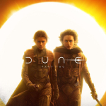
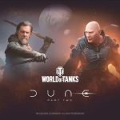
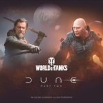

Índice
Informaçoẽs Do Filme
Sinopse
Inspirado na série de livros de Frank Herbert, Duna se passa em um futuro longínquo. O Duque Leto Atreides administra o planeta desértico Arrakis, também conhecido como Duna, lugar de única fonte da substância rara chamada de "melange", usada para estender a vida humana, chegar a velocidade da luz e garantir poderes sobrehumanos. Para isso ele manda seu filho, Paul Atreides (Timothée Chalamet), um jovem brilhante e talentoso que nasceu para ter um grande destino além de sua imaginação, e seus servos e concubina Lady Jessica (Rebecca Fergunson), que também é uma Bene Gesserit. Eles vão para Duna, afim de garantir o futuro de sua família e seu povo. Porém, uma traição amarga pela posse da melange faz com que Paul e Jessica fujam para os Fremen, nativos do planeta que vivem nos cantos mais longes do deserto.
Enredo De Duna
Ambientada em um futuro longínquo e distópico, o espaço é um enorme império intergalático, no qual o sistema dos planetas é comandado e administrado pelos nobres da sociedade. É neste cenário que Duna conta a história de Paul (Chalamet), um jovem brilhante e talentoso, e também o único herdeiro da família Atreides, o clã mais poderoso. Utéisido planeta Arrakis, o único lugar onde existe a substância mais valiosa do universo, o Melange, o duque Leto Atreides (Oscar Isaac), pai do protagonista, acaba caindo em uma armadilha criada por seus inimigos, o que poderá colocar um fim definitivo à dinastia. Assim, com grandes responsabilidades, Paul vê sua família sofrer as consequências de uma traição externa, enquanto parte junto de sua mãe rumo ao encontro dos Fremen, os nativos de Arrakis, no deserto profundo. Com o objetivo de garantir o futuro de sua família, bem como do povo do planeta árido, o jovem herói terá que deixar seus medos de lado se quiser sobreviver.
Material De Divulgação
Trailler Do Filme
Galeria De Imagem

 

Links Utéis
Noticias
-
Qual a duração de Duna 2?
-
Duna - Parte 2 adere de vez ao gigantismo para superestimar seu impacto
-
Duna 2 tem primeiras reações empolgadas: “Obra-prima!”
Duna: Parte 2 chega só no fim do mês, mas quem já viu o filme garante que vem cinemão por aí. O longa de Denis Villeneuve teve exibição especial para a imprensa, e as primeiras impressões destacam uma aventura ainda mais grandiosa do que a anterior. Leia mais...
Épico espacial, “Duna: Parte 2” é a sequência do bem-sucedido “Duna” (2021), uma nova adaptação cinematográfica do cultuado romance do escritor americano Frank Herbert. Entretanto, muitos devem se perguntar sobre a duração de ‘Duna: Parte 2’ por uma série de motivos. O filme anterior possui uma duração longa e cobriu aproximadamente metade da obra original, que também é extensa. Leia mais...
Na crítica da primeira parte de Duna, escrevi que o filme opera em dois níveis que pouco se comunicam entre si: o épico de escopo descomunal, com todo o gigantismo de naves, palácios e horizontes sem fim, e o drama de câmara dos personagens envolvidos nesse épico, cujas intrigas palacianas são quase sempre enquadradas em plano americano ou close-up, sem a devida aproximação para de fato situar sua presença nesse mundo. O diretor Denis Villeneuve não comete o mesmo erro em Duna - Parte 2: ele simplesmente faz uma escolha pelo gigantismo. Leia mais...